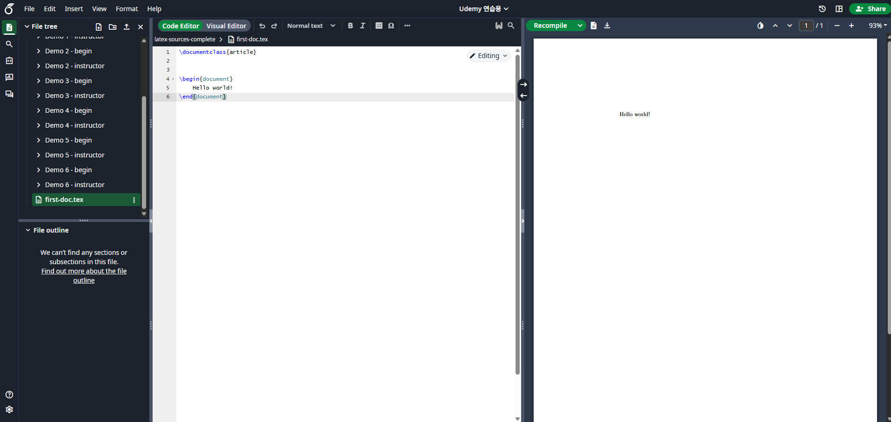

Overleaf / LaTeX Learning Guide
The most powerful document system for academic writing — from first steps to real papers. Not just syntax: this guide follows the actual flow of paper writing, comparing code with rendered output side by side.
01 Introduction to Overleaf
What LaTeX and Overleaf are — and why academia depends on them.
What is LaTeX?
LaTeX is a professional typesetting language built on top of Donald Knuth's TeX system. Unlike WYSIWYG editors such as Word, you describe your document's structure with a markup language and a compiler produces a polished PDF.
What is Overleaf?
Overleaf is a cloud-based collaborative LaTeX editor. No installation required — write, compile, and collaborate directly in your browser. overleaf.com
Compilation Flow

02 documentclass
The first line — defines the document type and global options.
\documentclass[12pt,a4paper]{article}Common Classes
| Class | Purpose |
|---|---|
article | Papers, assignments, short reports |
report | Longer chapter-based documents (theses) |
book | Books |
beamer | Presentation slides |
letter | Letters |
IEEEtran | IEEE conferences (required) |
Common Options
| Option | Effect |
|---|---|
10pt / 11pt / 12pt | Base font size |
a4paper / letterpaper | Paper size |
twocolumn | Two-column layout |
fleqn | Flush-left equations |
onecolumn | One-column layout (default) |
03 Document Skeleton
Preamble vs. Document body — the bones of every LaTeX document.
% --- Preamble (configuration area) ---
\documentclass{article}
\usepackage{graphicx} % figure inclusion
\usepackage{amsmath} % math environments
\usepackage{hyperref} % hyperlinks / cross-references
% --- Document Body (actual content) ---
\begin{document}
% write your content here
\end{document}\begin{document} and \end{document}.
Document Structure Visualization

04 Title & Authors
The paper header — Title, Author, Date.
\title{TDA for Medical Data}
\author{Sunjun Hwang \\
Yonsei University}
\date{May 2026}
\begin{document}
\maketitleTDA for Medical Data
Multiple Authors with Affiliations
\author{
Sunjun Hwang$^{1}$
\and
Co-Author$^{2}$ \\
$^{1}$Yonsei University \\
$^{2}$Permillion Inc.
}\maketitle, nothing will be printed even if you declared \title / \author.

05 Abstract
A single paragraph that summarizes the entire paper.
\begin{abstract}
We apply Topological Data Analysis (TDA)
to BRCA breast cancer datasets to discover
novel topological structures and biomarkers.
Our results show that persistence-based
features outperform conventional baselines
in subtype classification.
\end{abstract}Abstract
We apply Topological Data Analysis (TDA) to BRCA breast cancer datasets to discover novel topological structures and biomarkers. Our results show that persistence-based features outperform conventional baselines in subtype classification.
06 Section / Subsection
Document hierarchy — the foundation of automatic numbering and the table of contents.
\section{Introduction}
\subsection{Background}
\subsubsection{Prior Works}
\section{Method}
\subsection{Persistent Homology}1Introduction
1.1Background
1.1.1Prior Works
2Method
2.1Persistent Homology
* like \section*{Acknowledgments} to suppress both numbering and TOC inclusion.


07 Label & Reference
Automatic in-document cross-referencing — one of LaTeX's greatest strengths.
\section{Introduction}\label{sec:intro}
As shown in Section \ref{sec:method}, ...
See Figure \ref{fig:overview} and Equation \eqref{eq:main}.Label Prefix Convention
| Type | Prefix | Example |
|---|---|---|
| Section | sec: | sec:introduction |
| Figure | fig: | fig:overview |
| Table | tab: | tab:results |
| Equation | eq: | eq:loss |
| Algorithm | alg: | alg:training |
\ref{x} alone tells you nothing about what is being referenced. Prefixes drastically improve readability and maintainability.
\label must come after \caption to capture the right number. If \label is placed before \caption, the reference will resolve to the wrong number.


08 Figure
Inserting figures in papers — the float environment.
\begin{figure}[t]
\centering
\includegraphics[width=0.8\linewidth]{figures/overview.pdf}
\caption{Overview of our TDA pipeline.}
\label{fig:overview}
\end{figure}Position Options
| Option | Meaning |
|---|---|
h | here — if possible, place at this point |
t | top — top of the page |
b | bottom — bottom of the page |
p | page — on a dedicated float page |
H | absolutely here (requires the float package) |
! | override LaTeX's placement constraints |
Two-Column-Spanning Figures (two-column layout)
\begin{figure*}[t] % use figure* instead of figure
\centering
\includegraphics[width=\textwidth]{wide.pdf}
\caption{Two-column-spanning figure.}
\label{fig:wide}
\end{figure*}


09 Table
Building tables — the table (float) plus tabular (content) combination.
\begin{table}[t]
\centering
\caption{Comparison.}
\label{tab:result}
\begin{tabular}{lcc}
\hline
Method & Acc. & F1 \\
\hline
Baseline & 82.1 & 0.79 \\
Ours & 89.4 & 0.87 \\
\hline
\end{tabular}
\end{table}Table 1. Comparison.
| Method | Acc. | F1 |
|---|---|---|
| Baseline | 82.1 | 0.79 |
| Ours | 89.4 | 0.87 |
Column Alignment Specifiers
| Specifier | Alignment |
|---|---|
l | Left-aligned |
c | Centered |
r | Right-aligned |
p{3cm} | Fixed width (auto line break) |
booktabs package and its \toprule, \midrule, \bottomrule macros — far cleaner than \hline.


10 Equation
Mathematics — the area where LaTeX shines brightest.
Inline Math
Einstein: $E = mc^2$.Display Math
\begin{equation}
\label{eq:loss}
L = - \sum_{i=1}^{N} y_i \log p_i
\end{equation}Align Environment (Multi-line Alignment)
\begin{align}
a &= b + c \\
&= d + e + f
\end{align}\usepackage{amsmath} — essential for advanced math environments such as align, gather, and cases.
11 Full Paper Skeleton
Everything you've learned, in one file.
\documentclass[11pt,a4paper]{article}
\usepackage{graphicx, amsmath, hyperref, booktabs}
\title{TDA for Medical Data}
\author{Sunjun Hwang}
\date{May 2026}
\begin{document}
\maketitle
\begin{abstract}
We apply TDA to BRCA datasets to discover novel biomarkers.
\end{abstract}
\section{Introduction}\label{sec:intro}
Recent advances in topology-driven ML ...
\section{Method}\label{sec:method}
We use persistent homology defined by:
\begin{equation}\label{eq:ph}
H_k(X_\epsilon) = \ker(\partial_k) / \mathrm{im}(\partial_{k+1})
\end{equation}
\section{Results}\label{sec:results}
As shown in Figure \ref{fig:result}, ...
\begin{figure}[t]
\centering
\includegraphics[width=0.8\linewidth]{result.pdf}
\caption{Main result.}
\label{fig:result}
\end{figure}
\bibliographystyle{plain}
\bibliography{refs}
\end{document}+ Tips · Mistakes · Templates
📑 Recommended Paper Templates
🚨 Common Beginner Mistakes
- Incorrect label position — placing
\labelbefore\captioncauses the wrong number to be referenced. - Missing begin/end pairs — mismatched environments cause compilation failures.
- Missing packages — always include
amsmath,graphicx, andhyperrefby default. - Math-mode errors — do not use
_or^outside of math mode. - Figure path errors — set the directory once with
\graphicspath{ {./figures/} }. - Korean character issues — use the
kotexpackage (pdfLaTeX) or XeLaTeX withkotex.
✅ Paper-Writing Best Practices
- Figure-first principle: sketch your figures before writing prose, then write to support them.
- Self-contained captions: the caption alone should explain the figure.
- Meaningful label naming: use semantic names like
fig:tda-pipeline— neverfig:1. - Version control: split content across
main.texandsections/*.tex, and track everything with git. - Bibliography: keep references in a separate
.bibfile — use Google Scholar's BibTeX export. - Overleaf collaboration: use track changes and inline comments aggressively.
🔧 Frequently Used Packages
| Package | Purpose |
|---|---|
amsmath, amssymb | Math environments and symbols |
graphicx | Figure insertion |
hyperref | Hyperlinks and automatic cross-references |
booktabs | Beautiful tables (\toprule etc.) |
cleveref | Smart references (\cref) |
algorithm, algpseudocode | Pseudocode |
listings | Source-code highlighting |
tikz, pgfplots | Diagrams and plots |